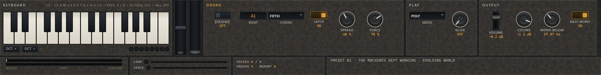
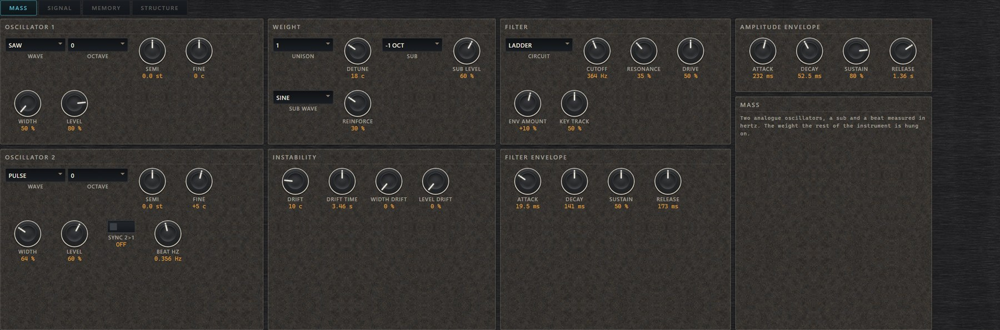
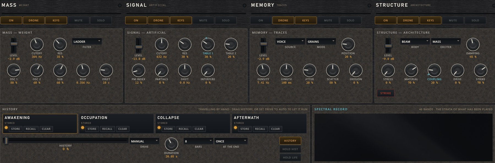
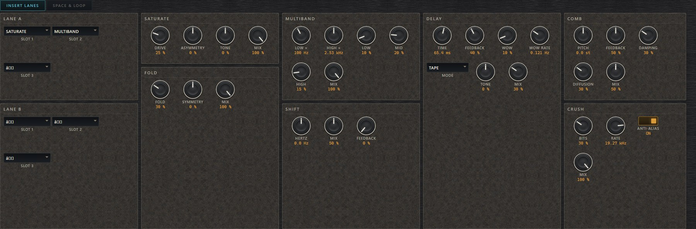
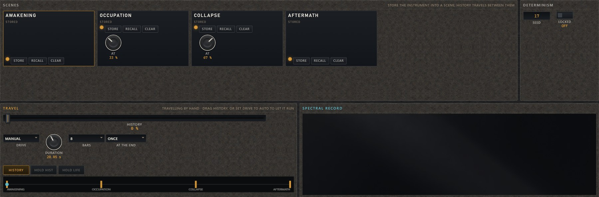
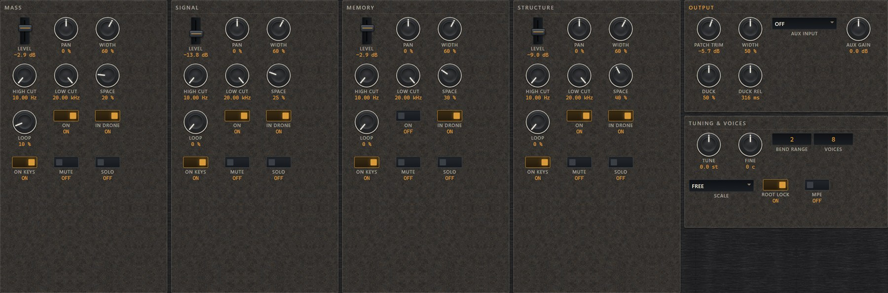

An instrument named for how long spent fuel stays dangerous. Four ways of
making sound, a shared environment that helps make it, a modulation
network that listens to the engine's own output, and one control that
carries the whole thing from one condition to another over up to half an
hour. September 2026.
What it is
A place, not a patch
Thirty Thousand Years makes sound four different ways at once, puts
all four in the same room, and then lets the room take part in making
the sound rather than only treating it.
The four ways are called strata. MASS is virtual
analogue: two oscillators, a sub, and a beat set in hertz. It is the
weight. SIGNAL is wavetables, phase modulation and a bank of
additive partials — something has learned to think.
MEMORY is granular and spectral reading over material you
captured or imported — the world remembering itself.
STRUCTURE is resonant bodies under an exciter —
architecture under stress. Every one of them is a complete instrument,
and any combination of them can be on at once.
Underneath them is the ENVIRONMENT: a mixer, two lanes of
insert processors, a space, and an explicit feedback loop that
can return into a stratum's input instead of into the mix. That last
choice is the whole design in one control. A loop that returns into
the mix is an echo. A loop that returns into STRUCTURE's exciter is
the instrument playing itself.
The deck. The four strata across the top, HISTORY
and the spectral record beneath them, the eight macros as one row,
and the keyboard, the drone and the output along the foot.
Installing
Copy Thirty Thousand Years.vst3 into your VST3 folder
— normally
C:\PROGRAM FILES\COMMON FILES\VST3
— and rescan. The standalone in the same download needs
nothing installing.
Thirty Thousand Years · Owner's Handbook02
The idea
The four strata
MAIN.
One column per stratum, each with its own switches, its nine most-used
controls and a live meter. Below them: HISTORY with its four scenes, and
the spectral record — the output's own spectrum, drawn as layers
of rock, left to right, oldest at the far edge.
MASSTwo analogue oscillators with a sub and a beat measured in hertz. The weight the rest of the instrument is hung on, and the only stratum that is on when you open a fresh instance.
SIGNALTwo wavetables, a phase-modulation pair, a ring modulator and a 64-partial additive bank whose upper partials can lose their harmonic alignment while the fundamental holds.
MEMORYA granular reader and a spectral resynthesis over procedural material, a 30-second capture or an imported WAV, both under one EROSION control.
STRUCTURESeven resonant bodies driven by an impulse, a noise burst, a bow, or any other stratum. STRESS carries it from a coherent object to fracture.
Thirty Thousand Years · Owner's Handbook03
Finding your way
The header and the six views
The panel never changes shape. The header, the eight macros and the foot
are always there; only the middle is swapped by the six tabs. Nothing is
hidden in a menu, and every control on every view has a written
explanation attached to it — press TOOLTIPS in the header to
leave them on, or hold CTRL to see one while you point at
something.
The header. The patch window with its name, category
and note; then PATCHES, USER, SAVE and OPEN; the A/B pair with STORE;
UNDO; MUTATE with its amount and its seven group locks; QUALITY;
ASSIGN; MOTION; TOOLTIPS; WORLD FX; and PANIC.
MAINThe four strata, HISTORY and the spectral record.
SOURCESFour pages, one per stratum, with everything in it.
LIFEModulators, the network, the event lanes, the matrix.
HISTORYThe four scenes and the travel controls.
ENVIRONMENTThe insert lanes, the space and the feedback loop.
MIXFour channel strips, output, tuning and voices.
Panic
PANIC fades the output over 20 ms, clears every voice, every
delay line and the feedback loop, switches the drone off, and stays
stopped. Nothing restarts until you play a note or switch the drone
back on. It is the one control in here that is allowed to be rude.
Mutate, undo, A/B
MUTATE nudges the patch by the amount beside it. The seven
chips lock a group out of it — MA, SI, ME, ST, EN, LI and GL
for the globals, which is locked by default. Levels, the drone
switch, the macros and the loop send are never mutated at all.
UNDO swaps with the state before the last big move, so a
second press is a redo.
Thirty Thousand Years · Owner's Handbook04
The foot
Three ways to play it
A fresh instance is exactly silent, and stays silent until you ask
it for something. That is deliberate: an instrument that starts droning
the moment it is loaded cannot be used on a busy session. There are three
ways to ask, and they share the same eight voices — the drone chord
takes as many as its size needs and the keyboard gets the rest.

The foot. The keyboard with its octave buttons, held
notes and voice lamps; the bend and mod wheels; DRONE with its root,
chord, latch, spread and force; PLAY with the voice mode and glide; and
OUTPUT with VOLUME, CEILING and
the bass-mono fold. Along the bottom: the output and limiter meters, the
loop and space energy, the voice, grain and memory counts, and the name
of the patch on the dial.
Drone
An explicit switch
Switch DRONE on and the instrument sounds with no note held.
Set the ROOT as a note name and the CHORD above it,
from UNISON to OPEN FIFTHS. SPREAD places those notes across
the stereo field; FORCE is how hard they strike.
Instrument
Up to eight voices, MPE
POLY, MONO or LEGATO, with velocity, bend, sustain and aftertouch,
and MPE for a controller that sends per-note pressure and
slide. VOICES caps the count; fewer voices costs less and
makes a dense patch behave more like one object.
Excitation
The AUX input
Feed audio into the AUX bus and set AUX INPUT on the MIX
view. EXCITE drives STRUCTURE with it and feeds MEMORY's capture;
DUCK makes the instrument step back for it; EXCITE + DUCK does both.
Both at once
Each stratum has its own IN DRONE and ON KEYS switches on
the MIX view. That is how you build a patch where the drone is MASS and
STRUCTURE while the keyboard plays SIGNAL over the top of it, out of one
instance.
Thirty Thousand Years · Owner's Handbook05
Getting started
Five minutes
ONEIn the header, step the patch window to THE SEA IS MADE OF IRON. Its note appears under the name.
TWOSwitch DRONE on at the foot. It sounds. Nothing else has to be pressed.
THREETake the VIOLENCE macro up slowly and back down. It is not a volume: the bowed plate is being pushed, not amplified.
FOURMove ROOT down a few semitones and change CHORD. The whole world follows the root.
FIVEOpen SOURCES › STRUCTURE and move BOW SPEED. You are now inside the instrument.
Then try
THIRTY THOUSAND YEARS, the flagship. Its four scenes are
already stored and HISTORY is already switched on. Set
DURATION to thirty minutes, put DRIVE on AUTO,
and leave it.

SOURCES. Every stratum has a page like this one,
with nothing folded away. MASS is shown: its two oscillators, the
weight, the instability, the filter and the two envelopes.
Every control explains itself
This handbook describes what the instrument is for. It does not
list all 401 parameters, because the panel already does: every
control carries a written line saying what it is and how it is
used, placed beside it and never over it. TOOLTIPS in the
header leaves them showing; CTRL summons one on demand.
Thirty Thousand Years · Owner's Handbook06
Stratum one
MASS — the thing beneath the ground
MAIN, the MASS column. It is the first of the four: level, cutoff, resonance and the filter circuit on the top row; the two oscillators, the sub, the beat and the drift below. Everything else MASS owns is on SOURCES › MASS.
Two band-limited oscillators — sine, triangle, saw or pulse
— each with an octave, a semitone, a fine tuning and a level,
plus hard sync. Beneath them a sub one or two octaves down, and
REINFORCE, which feeds MASS back into itself a little so the
low end survives a small speaker. The filter is a four-pole
LADDER or a state-variable circuit with low, band, high and
notch — both with drive, and both with saturation inside the
resonance so a screaming filter stays a note.
BEAT (HZ)Detunes oscillator 2 by a fixed number of hertz instead of a number of cents, 0.02 to 12 Hz.
DRIFTUp to 50 cents of slow wander, over a DRIFT TIME of 0.2 to 60 seconds.
Thirty Thousand Years · Owner's Handbook07
Stratum two
SIGNAL — something has learned to think

MAIN, the SIGNAL column. The second of the four: level, cutoff, resonance and the two table positions; then the PM index, the partials, the frequency shift and INTERFERENCE. The rest is on SOURCES › SIGNAL.
Eight original wavetables — GEOMETRIC, MACHINE, FORMANT,
HOLLOW, STEPPED, METALLIC, SIREN, ORGANISM — of eight frames
each, on two oscillators that can ring-modulate one another. Behind
them a two-operator phase-modulation pair with its own ratio, index
and feedback, and an additive bank of up to 64 partials with controls
for spread, odd against even, tilt, clustering, gaps and motion.
FUNDAMENTAL is the one that matters: it holds the first
partial in place while everything above it walks out of the harmonic
series.
FREQ SHIFTMoves every frequency by the same number of hertz, up to 2000 either way; the knob is fine near zero.
PITCH SHIFTTransposes by a ratio instead, up to two octaves either way.
Thirty Thousand Years · Owner's Handbook08
Stratum three
MEMORY — the world remembering itself
MAIN, the MEMORY column. The third of the four: the source and the reading mode; then position, density, grain length, jitter, scatter and EROSION. The rest is on SOURCES › MEMORY.
Four procedural sources are built into the instrument —
VOICE, BROADCAST, CHOIR, MACHINE —
so a patch works with no files at all. Beyond them a rolling
CAPTURE of the last thirty seconds, taken from before the loop,
after the space or from the AUX input, and an IMPORT of your
own WAV. MEMORY reads that material with grains (5 ms to 2 s each, up
to 200 a second), with a spectral resynthesis that can be frozen,
smeared, tilted, thinned and displaced, or with both at once.
EROSIONOne control over four kinds of decay, each still separately reachable underneath it.
SCANHow fast the reading position moves on its own, and in which direction.
Thirty Thousand Years · Owner's Handbook09
Stratum four
STRUCTURE — architecture under stress
MAIN, the STRUCTURE column. The fourth: the body and the exciter; then stress, material, coupling, drive, strike and damping, with a STRIKE button that hits it now. The rest is on SOURCES › STRUCTURE.
Seven bodies. PLATE, CABLE, BEAM, CAVITY
and GLASS are banks of up to 48 tuned resonators; TUBE
and COMB are waveguides. They are designed resonances
rather than simulations of real objects, and they are meant to be
pushed past where a real object would go. The exciter is an impulse,
a noise burst, a bowing friction model, or any of MASS, SIGNAL,
MEMORY, the loop return and the AUX input — which is where a
stratum stops being a layer and becomes a cause.
STRESSUp, the body detunes, then the modes trade energy and it groans, then it fractures.
SUSTAINEnergy fed in continuously rather than as a strike. It does not erase the strike.
Thirty Thousand Years · Owner's Handbook10
The environment
The space, and the loop that generates
ENVIRONMENT has two pages. SPACE & LOOP holds the reverberator,
the perspective controls and the feedback loop; INSERT LANES holds
the seven processors and the two lanes they sit in.
The space is early reflections into an eight-line network, with a
decay from a fifth of a second up to a minute, frequency-dependent
damping, motion and a freeze. APPARENT SCALE and
DISTANCE are separate on purpose: scale moves the reflection
pattern, which is what the ear reads as the size of a place, while
distance trades direct sound for reflected and loses the high end to
the air. Neither of them is an amount, and neither touches the width.
The feedback loop is a node of its own, not a send. It has a
delay from one millisecond to two seconds, a high-pass and a low-pass,
a frequency shift, a saturation and a damping, and its energy is
metered on the panel so you can see it settle or climb.
Where the loop returns
RETURNS TO has four settings and it is the most consequential
control in the environment. MIX makes the loop an echo.
STRUCTURE hands it to the exciter, so the room plays the
body. MEMORY feeds the capture, so the loop is remembered.
SIGNAL feeds the ring modulator.
SHIFTMoves the loop's frequencies a little on every pass, so the accumulation climbs or falls instead of ringing on one note.
SATURATIONLimits the growth by itself, which is what lets the loop be run near unity without exploding.
HIGH-PASSWithout it the loop accumulates weight until nothing else can be heard.
DAMPINGThe plain safety control. Turn it up if the loop is running away from you.
Thirty Thousand Years · Owner's Handbook11
The environment
Insert lanes

ENVIRONMENT › INSERT LANES.
The two lanes on the left; every processor's controls are on the page
beside them whether it is in a lane or not.
Two lanes of three slots. Lane A sits on the mix bus, lane B on
the way into the space — so B dirties the room without dirtying what
stands in front of it. Any slot holds any of the seven, in any order.
SATURATEAsymmetric valve saturation, level-matched by measurement so DRIVE is not simply louder.
FOLDWavefolding, symmetrical or not. It adds harmonics unrelated to the original spectrum.
MULTIBANDThree bands driven separately, with the low band protected so the weight survives.
SHIFTSingle-sideband shifting in signed hertz, with feedback for a rising staircase.
DELAY1 ms to 2 s. TAPE detunes and dulls every pass; CLEAN repeats what it was given.
COMBA resonant comb tuned in semitones, with damping and diffusion.
CRUSHBit and rate reduction, with an anti-alias switch for the grit without the folding.
Thirty Thousand Years · Owner's Handbook12
Life
The instrument moves by itself
LIFE › LFO.
One of the five pages behind the tabs at the top: LFO, ENVELOPES &
SHAPES, RANDOM & FOLLOW, EVENTS & NETWORK, and MATRIX. Eight
oscillators, each with a shape, a rate, a sync division, a phase offset,
a scope and a live readout.
8 LFOsSix shapes, 0.0008 Hz to 50 Hz, so one cycle can last twenty minutes. Free or locked to the host's bars; global or one per voice.
4 envelopesTriggered by a note, by the drone starting, or by an event lane.
4 shapesDrawable multi-segment envelopes. Click to add a point, drag to move it, alt-click to remove it.
4 random sourcesSmooth noise, a random walk with a restoring force, sample and hold, probability, cluster bursts, or bounded chaos.
2 followersTurn the loudness of any stratum, the mix or the AUX input into a modulation source.
4 event lanesEach fires with a chance, at a rate, with a refractory wait, at one of seven targets.
Thirty Thousand Years · Owner's Handbook13
Life
The matrix, and the network
Thirty-two slots on the last of the LIFE pages. Each takes a source, a
destination, a signed depth, a second source to scale it by, a curve, a
slew and a range clamp.
Drag a source out of the palette on the RANDOM & FOLLOW page onto
any control on any view and a slot is filled for you. Modulation is
applied as an offset on the value you set, clamped to the
parameter's own range — the value you edited never moves
underneath you, so a modulated patch is still the patch you built.
ASSIGN in the header is the short way here. The matrix is a
blob inside the patch rather than a set of host parameters, which is
deliberate: thirty-two routings would flood an automation list and
none of them is the kind of thing you draw a lane for.
The LIFE network
Detectors measure energy, brightness and transients on each stratum
and on the mix, and offer them as modulation sources like any other.
COUPLING scales every one of those cross-stratum terms;
AUTONOMY sets how far the world may drift from the state you
edited; RECOVERY pulls it back. HOLD LIFE freezes
every modulator where it stands while the sound goes on.
SOURCEAny LFO, envelope, shape, random source, follower or event lane; any of the network's detectors; velocity, pressure, key, wheel or bend; any macro; HISTORY itself; or a constant.
DEPTH and VIAA signed amount, and a second source that scales it — so one modulation can gate another without a utility module in between.
CURVE and SLEWHow the source is shaped on its way to the destination, and how fast it is allowed to move once it gets there.
RANGEA clamp on the result, so a modulation can be prevented from reaching either end of the parameter it drives.
Thirty Thousand Years · Owner's Handbook14
History
Four scenes, one journey

HISTORY.
The four scenes along the top with their lamps and their names, the
determinism controls beside them, TRAVEL below, and the spectral record
to the right. The line under the scenes says what is stopping the
journey, if anything is.
It has to be armed, and it needs two scenes
HISTORY is off in a fresh patch and it needs at least two different
scenes stored. Until both of those are true the HISTORY slider moves
and nothing happens, which looks exactly like a broken control. The
panel says so itself, in the line under the scene tiles: it will tell
you there are no scenes stored, that there is only one, or that the
scenes exist but HISTORY is switched off. Read that line first.
Thirty Thousand Years · Owner's Handbook15
History
Storing scenes, and travelling
ONESet the instrument up the way the piece should start. Press STORE on scene 1. Its lamp lights and the tile reads STORED.
TWOChange something — anything musical — and store scene 2. A scene holds every musical parameter; it deliberately does not hold the output calibration, the quality setting, the drone switch, the file state or the seeds.
THREESwitch HISTORY on. The slider now travels from scene 1 through the scenes you have stored. Scenes 2 and 3 can be moved along that line, so you can spend longer in one part of the piece than another.
FOURSet DRIVE. MANUAL is you, by hand or by host automation. AUTO runs on its own clock over a DURATION of anything from one second to thirty minutes. AUTO SYNC runs on the host's bars instead, from 1 to 128 of them. At the end it can stop ONCE, LOOP, or PING-PONG back the way it came.
What a scene does not hold
A scene stores the musical state and nothing else. The output
calibration, the quality setting, PANIC, the file state, the drone
switch and the seeds all stay where you left them, so travelling
through a piece can never change your monitoring level or start the
instrument on its own. MUTE and SOLO are outside a scene too.
How it interpolates, and how to stop it
Pitches move in semitones, times and frequencies logarithmically,
levels in decibels, and anything that is a list or a switch steps
over at the midpoint rather than smearing. HOLD HISTORY
stops the journey where it is without switching it off, so you can
sit inside one moment for as long as you like.
Thirty Thousand Years · Owner's Handbook16
The macros
Eight words for what happens next
The macro row. Always visible, on every view. Click a
macro's name to open its map and see or change what it reaches.
Each macro drives up to eight destinations at signed depths, and the map
is stored in the patch. The meanings are consistent across the bank, so
the same word does a recognisable thing on any preset — except
HUMANITY, which is patch-specific by design and is mapped
individually on the presets that use it.
MASSWeight and physical presence: the low end, the sub and the body of everything.
DREADSuspense. The sound leans somewhere without arriving.
VIOLENCEAbrasion and force — drive, stress and saturation. Level-matched, so it is not simply louder.
INSTABILITYLoss of equilibrium: drift, wander, and the network's autonomy together.
CONTAMINATIONThe strata stop being separate and start exciting each other.
DISTANCEFrom near presence to a remote trace: space, damping, loss of detail.
LIFEHow much the instrument moves when you are not touching it.
HUMANITYRecognisable vulnerability. What is left that a person could have made.
Thirty Thousand Years · Owner's Handbook17
Levels
The mix, and the two faders

MIX.
Four channel strips — level, pan, width, two cuts, the space and
loop sends, and the switches for whether that stratum takes part in the
drone and on the keys — then OUTPUT with PATCH TRIM and the AUX
input, and TUNING & VOICES.
PATCH TRIM belongs to the patch; VOLUME belongs to you
PATCH TRIM on the MIX view is the patch's own output level. It is
saved with the patch, it travels through HISTORY, and it is what the
forty-eight factory patches are levelled with, so one of them is not
three times louder than the next. VOLUME at the foot is yours,
and no preset ever touches it. VOLUME runs into the limiter, so
pushing it past the point where the meter stops rising is asking for
compression rather than for level. The limiter is idle on every factory
patch, and the whole bank sits inside a 16.8 dB spread.
Thirty Thousand Years · Owner's Handbook18
After the environment
The Brokild World FX rack
WORLD FX in the header opens the rack that every Brokild
instrument shares. It sits after the engine's own environment, at the
very end of the chain, and it is empty by default — a
patch that does not use it sounds exactly as though it were not there.
The rack holds reorderable effect pedals on the left and SPECTRA
characters on the right, each with its own dry/wet PRESENCE, and it
has its own presets. It is stored inside the patch, so a patch you
save carries its rack with it.
Five automatable macros
BWFX MACRO 1 to 5 are the rack's entire host-parameter
surface, and they bring the total offered to a host to 401. Each one
maps a destination from one end of its range to the other, so a
macro at 100 % runs its control all the way up and a macro at 50 %
stops it halfway. Macro 5 ships wired to the rack's own dry/wet, so
a fresh rack is exactly today's sound.
Where it sitsAfter the mix, the space, the loop and the limiter. It is the last thing that happens.
What it costsNothing, until a module is switched on.
ReorderingDrag a pedal by its grip, or use its UP and DN buttons. Order is part of the sound.
SPECTRACharacters that reshape how every voice is built rather than sitting in the chain. MASS and SIGNAL consume their modulation bus.
It is not the environment
The rack is a finishing chain. The insert lanes, the space and the
feedback loop are part of how the instrument makes its sound, and
they are not in here. If you want the room to generate, use the
ENVIRONMENT view.
Thirty Thousand Years · Owner's Handbook19
The factory bank
Forty-eight patches, one
Drone
Beneath Thirty Kilometres of Concrete
Sub pressure under immense resonances.
The Sea Is Made of Iron
A bowed plate over a sub; the bow breathes.
Orbital Debris Choir
Inharmonic tones; the fundamental holds.
Steel Cathedral
A plate the size of a building, bowed.
Abandoned Substation
Mains hum, a transformer, a warm loop.
Hollow Earth
Hollow tables in a cavity. A mountain's note.
Cooling Towers
Concrete cylinders breathing, wide and slow.
Monolith
One enormous square sub. Nothing moves.
Evolving world
The Machines Kept Working
A process that organises itself.
No One Answers the Broadcast
A message degrades into fragments.
The Factory Dreamed of Flesh
Machine resonances acquire formants.
Thirty Thousand Years
The flagship journey. Thirty minutes.
Furnace
Heat rising through a beam.
Swarm
Organism tables; the network wide awake.
Industrial pulse
An Intelligence in the Walls
Pulses that learn to answer each other.
Something Learned to Breathe
Adapting pulses out of noise.
A Weapon Waiting for a War
Contained energy, then a release.
Hostile Computation
A machine thinking out loud.
Breath of the Grid
A synced gate over a sub. Tempo-locked.
Telemetry
Stepped tables, crushed, a siren behind.
The Last Generator
A gate, a tape delay, the loop in the body.
Restrained bed
A City Without Witnesses
Distant structures and air.
Population: Zero
Almost silence. Turn it up.
The Sun Behind the Ash
Obscured light. Nothing is loud.
Granite Pad
A dry wide pad. Sits under drums.
Voices Under the Ice
Frozen, smeared voices under a sine.
Last Light in the Tower
One fragile sine on glass modes.
The Deep Field
Inharmonic partials rising very slowly.
Thirty Thousand Years · Owner's Handbook20
The factory bank
Forty-eight patches, two
Transitional texture
The Last Human Frequency
A formant survives hostile spectra.
We Were Promised a Future
A mournful chord goes into the machine.
Sirens Over the District
Sirens sweeping, far away.
The Archive Burns
A frozen choir while the crusher eats it.
Slow Collapse
A clean chord to rubble in four minutes.
Radio Silence
The broadcast, frozen and shifted, thins out.
Resonant gesture
After the Final Transmission
Strike once; the loop takes the residue.
The Room Is Listening
Every note strikes glass. Play sparsely.
Stressed Plate
Strike it and it fractures.
Glass Rain
Noise bursts on glass, scattered by a lane.
Plate Tectonics
Bowed so slowly it creaks, until it gives.
Playable bass
Concrete Bass
Dry sub bass with a ladder growl. Mono.
Iron Bass
A struck cable. Velocity is the hammer.
Cable Bass
A bowed cable; aftertouch presses the bow.
Servo Bass
A machine table, snapping filter, a comb.
Dry
Cold Start
The naked MASS oscillators. A start.
Naked Signal
Only the SIGNAL tables, clean. For building.
Naked Structure
A struck plate and nothing else.
Naked Memory
The voice source through grains, dry.
Thin Air
A sine and a triangle, slowly. The quiet tone.
Ten are already travelling
Ten of the forty-eight ship with their four scenes stored and
HISTORY already switched on. On those, set a DURATION and put DRIVE
on AUTO and the piece runs itself. The rest wait for you to store
scenes of your own.
Thirty Thousand Years · Owner's Handbook21
Reference
Specifications
Formats
VST3 and Standalone, Windows 64-bit
Build
260923.1
Host parameters
401 — 396 plus five BWFX macros
Factory patches
48, ten with scenes stored
Voices
1 to 8, POLY / MONO / LEGATO, MPE
Audio in
One stereo AUX bus
Latency
88 samples at 44.1 kHz (2 ms of lookahead)
Sample rates
44.1 / 48 / 88.2 / 96 kHz
Cost, one core
5.6 % for a two-voice drone; 22.1 % for the flagship at eight voices with every macro up
Windows 10 or 11, 64-bit, and a VST3 host. The panel is drawn by the
Microsoft WebView2 runtime, which is present on any
up-to-date Windows 10 or 11 installation; if it is missing the
plugin says so and tells you where to get it. The engine does not
depend on the panel: a patch runs identically with the editor shut.
Credits
Designed and built by Brokild, September 2026, with the Brokild
World FX rack. Named for how long spent nuclear fuel stays
dangerous. Written under the long shadow of Asimov, Gibson,
Bradbury and Huxley, and in the weight of Cult of Luna and LLNN.